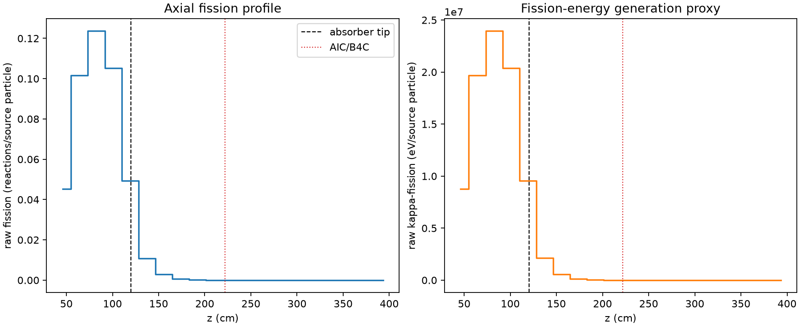
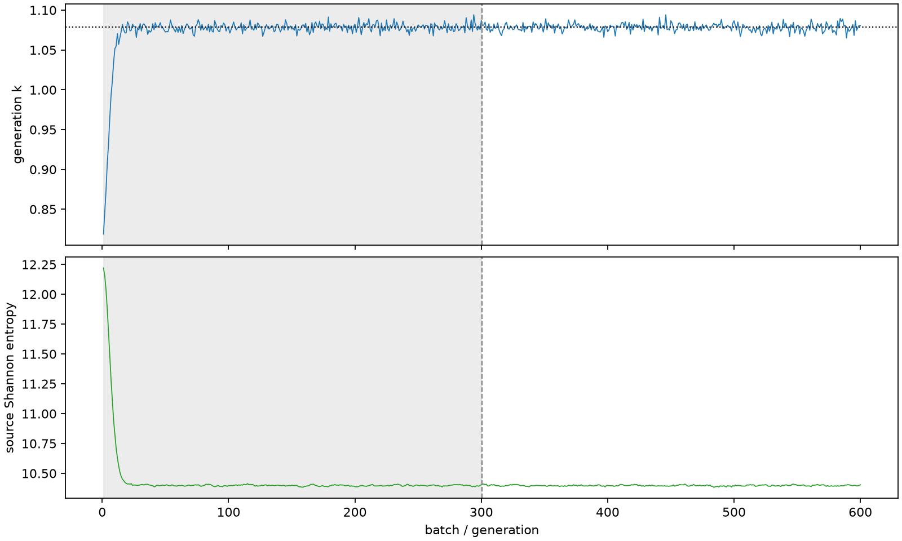

| field | value |
|---|---|
| experiment | V2-STAGE_256_OGRENCI_03-0013 |
| k | 1.078480373604494 |
| MC standard error | 0.00018393295707798803 |
| seconds | 1129.858727564002 |
| acceptance | not_assessed |
| convergence | review_required |
Completed is output integrity only; physical and statistical review required. Zero tallies do not prove zero production or zero uncertainty.
| diagnostic | value |
|---|---|
| geometric fuel voxels | 5280 |
| zero fission tally voxels | 1700 |
| low signal fuel voxels | 2783 |
| low signal fission share | 0.00011684396696987322 |
| low signal kappa share | 0.00011687177107289973 |
| important fission share | 0.9500192525661283 |
| previous filter included | 2497 |
| duration estimate s | 1562.5173488400023 |
| actual minus estimate s | -432.6586212760003 |
| fission relative MC error | statistics |
|---|---|
| all_geometric_fuel | {"voxels": 5280, "positive_mean_voxels": 3580, "zero_mean_voxels": 1700, "undefined_relative_error_voxels": 1700, "median": 0.031125401396908715, "p95": 0.9739400773327065, "maximum": 1.0000000000000002} |
| low_signal | {"voxels": 2783, "positive_mean_voxels": 1083, "zero_mean_voxels": 1700, "undefined_relative_error_voxels": 1700, "median": 0.6265116025703139, "p95": 1.0, "maximum": 1.0000000000000002} |
| important_95pct | {"voxels": 1276, "positive_mean_voxels": 1276, "zero_mean_voxels": 0, "undefined_relative_error_voxels": 0, "median": 0.0053274882527551155, "p95": 0.008036774780125433, "maximum": 0.008904142674635459} |
| outside_previous_filter | {"voxels": 2783, "positive_mean_voxels": 1083, "zero_mean_voxels": 1700, "undefined_relative_error_voxels": 1700, "median": 0.6265116025703139, "p95": 1.0, "maximum": 1.0000000000000002} |
| kappa_fission relative MC error | statistics |
|---|---|
| all_geometric_fuel | {"voxels": 5280, "positive_mean_voxels": 3580, "zero_mean_voxels": 1700, "undefined_relative_error_voxels": 1700, "median": 0.031075946498103572, "p95": 0.9739389772083629, "maximum": 1.0000000000000002} |
| low_signal | {"voxels": 2783, "positive_mean_voxels": 1083, "zero_mean_voxels": 1700, "undefined_relative_error_voxels": 1700, "median": 0.6249980102979349, "p95": 1.0, "maximum": 1.0000000000000002} |
| important_95pct | {"voxels": 1276, "positive_mean_voxels": 1276, "zero_mean_voxels": 0, "undefined_relative_error_voxels": 0, "median": 0.0053211479167503215, "p95": 0.00802654545259936, "maximum": 0.008893127586240817} |
| outside_previous_filter | {"voxels": 2783, "positive_mean_voxels": 1083, "zero_mean_voxels": 1700, "undefined_relative_error_voxels": 1700, "median": 0.6249980102979349, "p95": 1.0, "maximum": 1.0000000000000002} |
| axial bin | fission share | kappa-fission share |
|---|---|---|
| 1 | 0.10302028458021228 | 0.10302248074958319 |
| 2 | 0.23113899084109973 | 0.23113315667360657 |
| 3 | 0.2809890598361331 | 0.28098141143262473 |
| 4 | 0.23923553813512635 | 0.23922890565846958 |
| 5 | 0.11197018756646182 | 0.11197682808135265 |
| 6 | 0.024788826842012168 | 0.024797079263045932 |
| 7 | 0.00649653440398257 | 0.006498768839343965 |
| 8 | 0.0017234087456637866 | 0.0017239975859548345 |
| 9 | 0.0004607165535685861 | 0.00046086870799455406 |
| 10 | 0.00013372784133326986 | 0.00013376960492085595 |
| 11 | 3.363176723746065e-05 | 3.3638358147403084e-05 |
| 12 | 6.149749401636997e-06 | 6.151087413783527e-06 |
| 13 | 2.141297293290003e-06 | 2.1421484035856764e-06 |
| 14 | 6.830437333023925e-07 | 6.83167278875048e-07 |
| 15 | 1.187967405977802e-07 | 1.1864185955741394e-07 |
| 16 | 0.0 | 0.0 |
| 17 | 0.0 | 0.0 |
| 18 | 0.0 | 0.0 |
| 19 | 0.0 | 0.0 |
| 20 | 0.0 | 0.0 |
Histories include the inactive-to-active transition at batch 300. kappa-fission approximates fission energy production, not total heat deposition.

